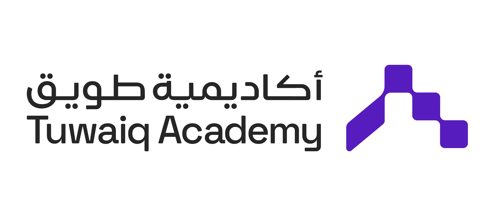
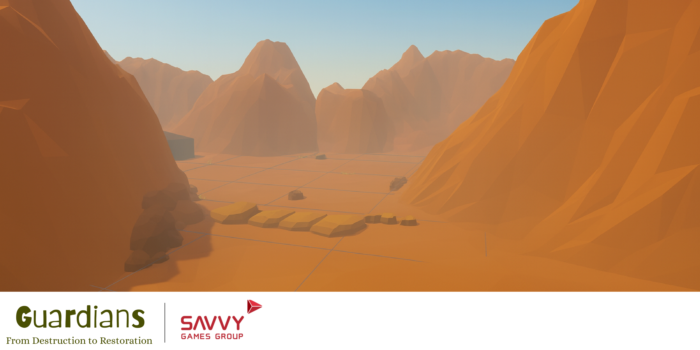
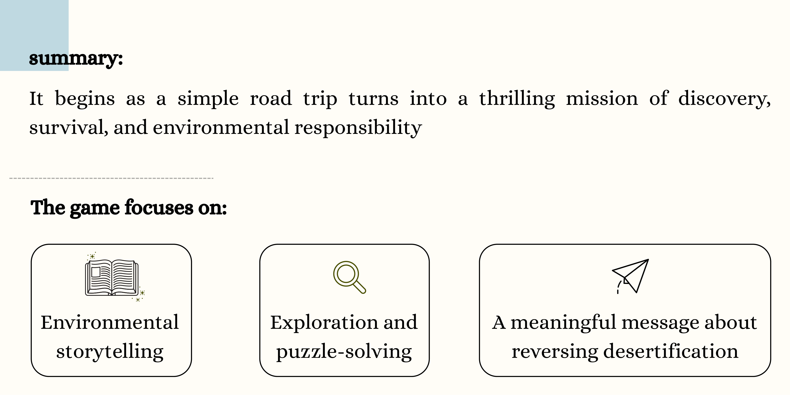
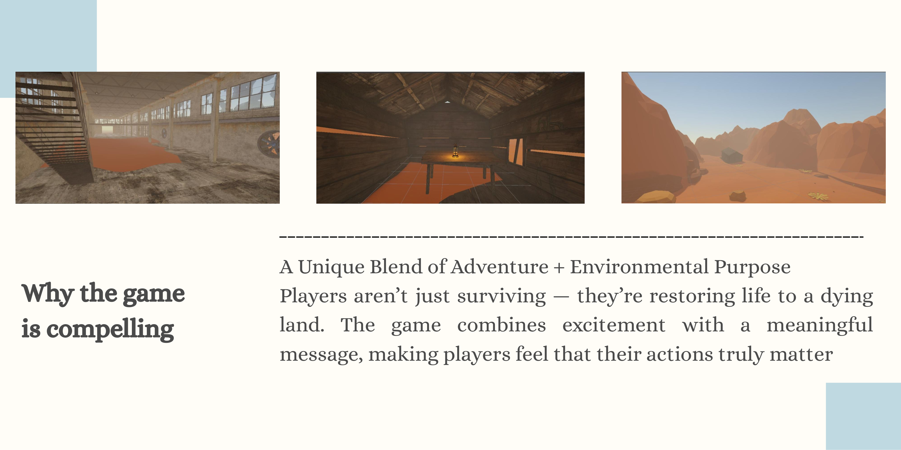
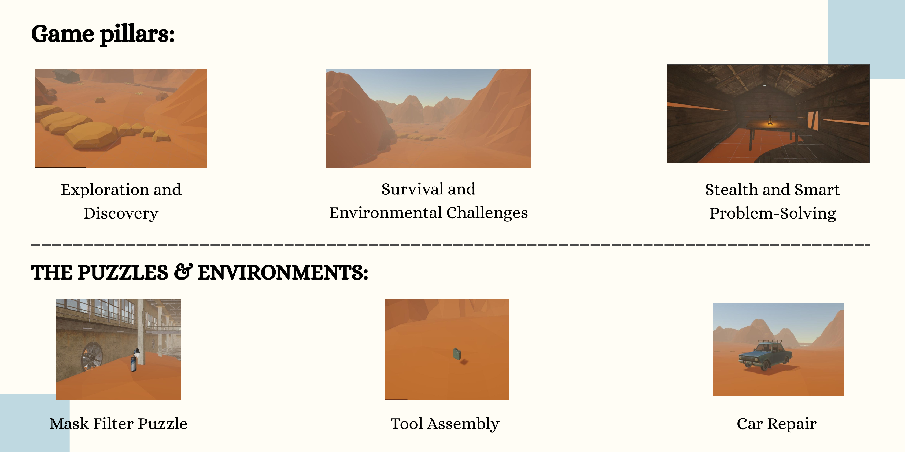
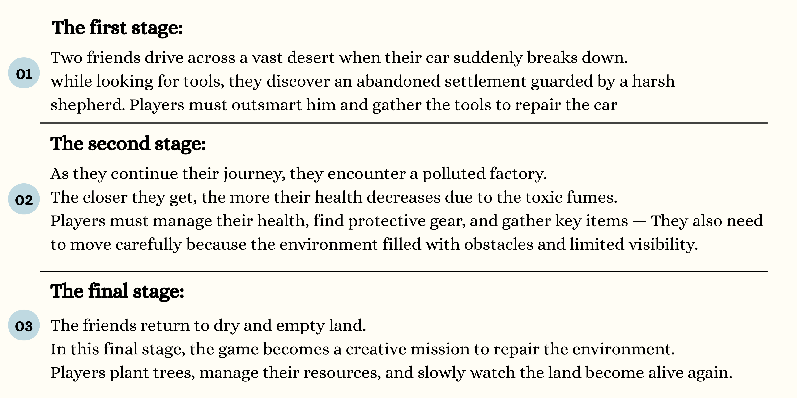
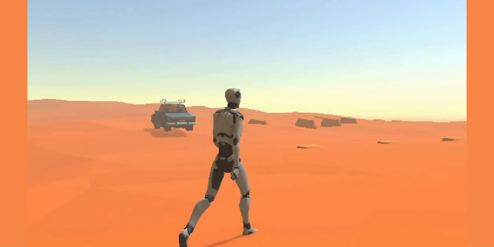
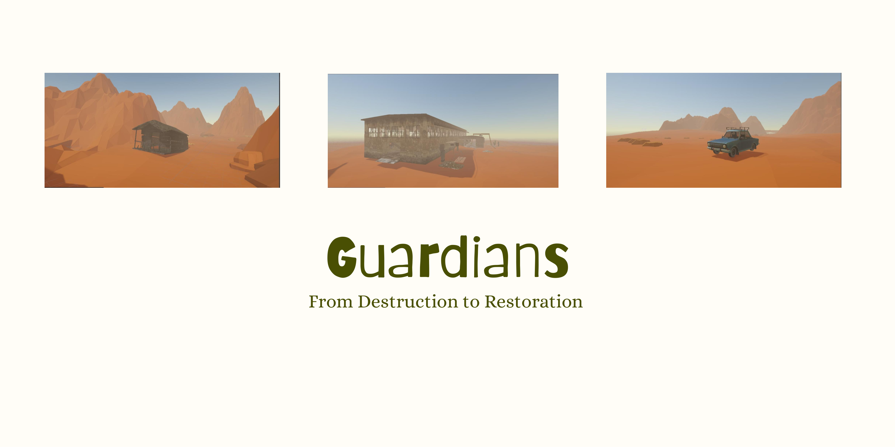

احمد الحربي
ahmed014x.com

من أنا؟
أحمد الحربي
خريج جامعة تبوك — بكالوريوس علوم حاسب (2025). تخصص ذكاء اصطناعي في كاوست، ومعسكر علوم البيانات والذكاء الاصطناعي في أكاديمية طويق، وحضانة Savvy Games. يعمل حالياً ضمن حضانة الكراج.
8+
مشاريع جاهزة
8+
الجوائز
700+
ساعات التطوع
احمد الحربي
ahmed014x.com
الخبرات
وين اشتغلت؟

ETRA
مرشد ذكاء اصطناعي
مارس 2026 — الحين

الكراج | The Garage
برنامج حضانة الكراج
فبراير 2026 — الحين
منصّة خاصّة بالدرون.

Savvy Games
برنامج حضانة Savvy
سبتمبر — ديسمبر 2025
مصمم واجهات وبيئات · لعبة Guardians.

وزارة الصحة
أخصائي ذكاء اصطناعي (متدرب)
يونيو — أغسطس 2024
تدريب نماذج على أشعة لكشف الأمراض.
احمد الحربي
ahmed014x.com
عطاء
خبرات تطوعية

نادي قوقل للطلاب المطورين — جامعة تبوك
رئيس لجنة المحتوى
2023 — 2024
قيادة فريق المحتوى وتنسيق الإنتاج البصري والكتبي.
نادي قوقل للطلاب المطورين — جامعة تبوك
مساعد رئيس لجنة المحتوى
2022 — 2023
دعم التخطيط والتنفيذ · ورش وتصميم إعلانات ومحتوى.
نادي قوقل للطلاب المطورين — جامعة تبوك
عضو في لجنة المحتوى
2021 — 2022
إعداد محتوى وتصاميم ومونتاج.
احمد الحربي
ahmed014x.com
التعليم
اختياري للتخصص

جامعة تبوك
بكالوريوس علوم حاسب
تخرّج 2025 · معدل 4.50 من 5
احمد الحربي
ahmed014x.com
التعليم
بعد سلاسل من الرفض


احمد الحربي
ahmed014x.com
التعليم
اختيار المسار

كاوست
معسكر تخصص ذكاء اصطناعي
أكتوبر 2024 — يناير 2025
جامعة تبوك
مقرر تعلم الآلة
خلال البكالوريوس
جامعة تبوك
مشروع التخرج
2025

أكاديمية طويق
معسكر علوم البيانات والذكاء الاصطناعي
أكتوبر — ديسمبر 2025
احمد الحربي
ahmed014x.com
المشاريع
Guardians
لعبة استراتيجية ضد التصحّر
حضانة Savvy Games · تطوير لعبة
لعبة استراتيجية غامرة تضع مستقبل الكوكب بين يديك: عالم يوشك أن يصير قفراً، واللاعب يقاتل تمدّد رمال التصحّر قبل ما تبتلع آخر البقاء الأخضر. التطوير على محرك Unity مع C# — مشاهد، منطق لعب، أصول ثلاثية الأبعاد، وواجهات.






